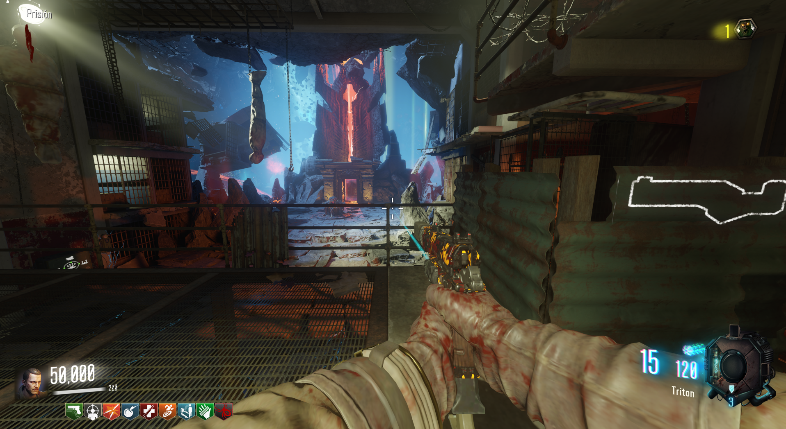
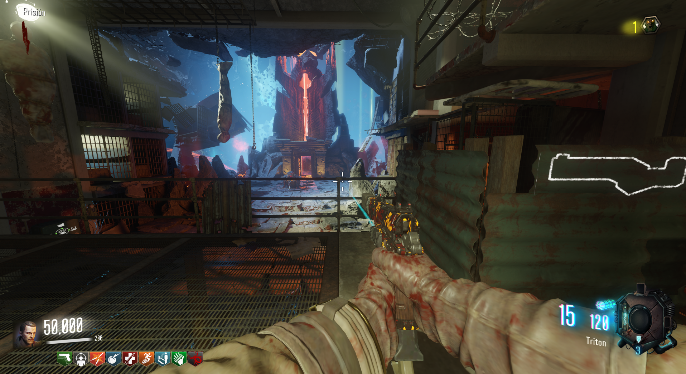

Pack-A-Punch (Revelations)

Primera parte: Tendremos que realizar los 4 rituales que se encuentran en The House, Der Eisendrachen, Verrückt y Mob of the Dead.

Segunda parte: Iremos a Nacht por alguno de los portales que se abren al completar el ritual y esperaremos a que el Apothicon pase para accionar la trampa.
Luego entraremos por su boca.
Al llegar. romperemos las bolsas amarillas del techo.
El PaP caerá de inmediato.

Segunda parte: Iremos a Nacht por alguno de los portales que se abren al completar el ritual y esperaremos a que el Apothicon pase para accionar la trampa.
Luego entraremos por su boca.
Al llegar. romperemos las bolsas amarillas del techo.
El PaP caerá de inmediato.